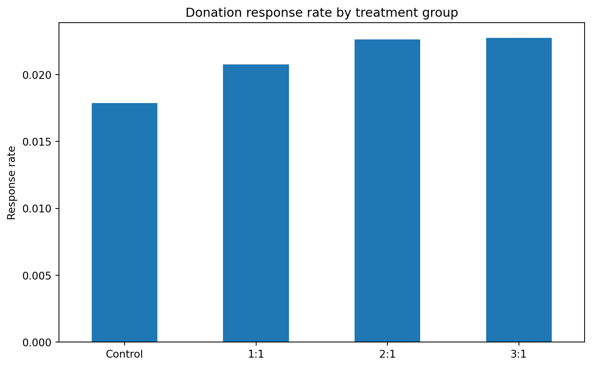

import pandas as pd
import numpy as np
import statsmodels.api as sm
import matplotlib.pyplot as plt
from pathlib import PathCharitable Giving and Matching Grants: A Replication of Karlan and List (2007)
Does Price Matter in Charitable Giving?
1 Introduction
Karlan and List (2007) study whether matching grants increase charitable donations. They analyze a large-scale field experiment in which prior donors to a nonprofit organization were randomly assigned either to receive a standard fundraising letter or a letter that included a matching-grant offer. Because assignment was random, differences in outcomes between treatment and control can be interpreted as causal rather than simply correlational.
This post replicates three parts of the paper. First, I check whether treatment and control groups are balanced on observable pre-treatment characteristics, corresponding to the logic of Table 1. Second, I replicate the main descriptive findings from Table 2A, panel A. Third, I estimate a simple regression similar to Table 3. I then add a figure that makes the main treatment pattern easier to see visually. ## Main Analysis
1.1 Data and setup
I use the replication dataset AERtables1-5.dta, which contains the observations used for Tables 1 through 5. The updated replication materials note that the newer data release includes a merged dataset with more metadata and variable labels, making replication easier.
The key variables used here are:
treatment: indicator for receiving any matching-grant treatment control: indicator for being assigned to the control group gave: indicator for whether the donor made a contribution amount: contribution amount in dollars ratio: treatment arm, coded as control, 1:1, 2:1, or 3:1 freq, HPA, years, female, couple, red0, cases, and nonlit: pre-treatment characteristics used for balance checks
data_path = Path("hw2_questions_files/113224-V1/AERtables1-5.dta")
df = pd.read_stata(data_path)
# Keep observations with non-missing main analysis variables
df2 = df.dropna(subset=["amount", "gave", "control", "treatment", "ratio", "size"]).copy()
df2.shape
#The cleaned analysis sample contains the same effective sample size reported in the paper.(50083, 35)1.2 Replication 1: Table 1 balance check
A useful first step is to verify that treatment and control groups look similar before treatment. If randomization worked, there should be no meaningful systematic differences in pre-treatment characteristics between the two groups. This is the logic behind Table 1 in the paper.
balance_vars = ["freq", "HPA", "years", "female", "couple", "red0", "cases", "nonlit"]
balance_table = (
df2.groupby("treatment")[balance_vars]
.mean()
.T
.rename(columns={0.0: "Control", 1.0: "Treatment"})
.round(3)
)
balance_table| treatment | Control | Treatment |
|---|---|---|
| freq | 8.047 | 8.035 |
| HPA | 58.960 | 59.597 |
| years | 6.136 | 6.078 |
| female | 0.283 | 0.275 |
| couple | 0.093 | 0.091 |
| red0 | 0.399 | 0.407 |
| cases | 1.502 | 1.499 |
| nonlit | 2.453 | 2.485 |
The treatment and control means are very similar across all of these variables. For example, the average number of prior donations, highest previous contribution, years since first donation, and demographic indicators differ only slightly across groups. This supports the claim that treatment assignment was random and that selection bias on observables is unlikely to explain the main treatment effects.
1.3 Replication 2: Table 2A panel A
The main descriptive result in the paper is that offering any match increases both the probability of donating and the average amount raised per letter. Table 2A also shows that larger match ratios do not meaningfully outperform a 1:1 match.
Control versus any treatment
overall_means = (
df2.groupby("treatment")[["gave", "amount"]]
.mean()
.rename(index={0.0: "Control", 1.0: "Any treatment"},
columns={"gave": "Response rate", "amount": "Dollars per letter"})
.round(6)
)
overall_means| Response rate | Dollars per letter | |
|---|---|---|
| treatment | ||
| Control | 0.017858 | 0.813268 |
| Any treatment | 0.022039 | 0.966873 |
My replication shows that the response rate rises from about 1.79% in the control group to about 2.20% in the treatment group. Average dollars raised per letter rise from about 0.813 to about 0.967. These values closely match the published table and support the paper’s main conclusion that the existence of a matching offer increases giving.
By match ratio
ratio_table = (
df2.groupby("ratio")[["gave", "amount"]]
.mean()
.rename(index={0.0: "Control", 1.0: "1:1", 2.0: "2:1", 3.0: "3:1"},
columns={"gave": "Response rate", "amount": "Dollars per letter"})
.round(6)
)
ratio_table| Response rate | Dollars per letter | |
|---|---|---|
| ratio | ||
| Control | 0.017858 | 0.813268 |
| 1:1 | 0.020749 | 0.936675 |
| 2:1 | 0.022633 | 1.026136 |
| 3:1 | 0.022733 | 0.937793 |
The response rate is lowest in the control group and higher in all three match conditions. However, the differences across the 1:1, 2:1, and 3:1 groups are small. The same pattern appears for unconditional dollars per letter: any match helps relative to control, but increasing the ratio above 1:1 adds little. This is the central descriptive finding of Table 2A.
1.4 Replication 3: Table 3
The paper’s Table 3 studies the effect of treatment on the probability of making a donation. Although the article describes these estimates as probit results, the assignment notes that the published numbers appear closer to a standard linear regression. I therefore estimate a linear probability model with heteroskedasticity-robust standard errors.
reg_df = df2.dropna(subset=["gave", "treatment"]).copy()
X1 = sm.add_constant(reg_df["treatment"])
y1 = reg_df["gave"]
m1 = sm.OLS(y1, X1).fit(cov_type="HC1")
m1.summary()| Dep. Variable: | gave | R-squared: | 0.000 |
|---|---|---|---|
| Model: | OLS | Adj. R-squared: | 0.000 |
| Method: | Least Squares | F-statistic: | 10.30 |
| Date: | Sun, 19 Apr 2026 | Prob (F-statistic): | 0.00133 |
| Time: | 22:20:02 | Log-Likelihood: | 26630. |
| No. Observations: | 50083 | AIC: | -5.326e+04 |
| Df Residuals: | 50081 | BIC: | -5.324e+04 |
| Df Model: | 1 | ||
| Covariance Type: | HC1 |
| coef | std err | z | P>|z| | [0.025 | 0.975] | |
|---|---|---|---|---|---|---|
| const | 0.0179 | 0.001 | 17.419 | 0.000 | 0.016 | 0.020 |
| treatment | 0.0042 | 0.001 | 3.209 | 0.001 | 0.002 | 0.007 |
| Omnibus: | 59814.280 | Durbin-Watson: | 1.997 |
|---|---|---|---|
| Prob(Omnibus): | 0.000 | Jarque-Bera (JB): | 4317152.727 |
| Skew: | 6.740 | Prob(JB): | 0.00 |
| Kurtosis: | 46.440 | Cond. No. | 3.23 |
Notes:
[1] Standard Errors are heteroscedasticity robust (HC1)
The estimated coefficient on treatment is about 0.0042, which means that receiving a match offer increases the probability of donating by about 0.42 percentage points. This closely matches the paper’s reported treatment effect in Table 3, column 1.
To look more closely at the treatment components, I also estimate a specification that adds the treatment interactions for match ratio, threshold amount, and suggested ask amount.
reg_df2 = df2.dropna(subset=[
"gave", "treatment", "ratio2", "ratio3",
"size25", "size50", "size100", "askd2", "askd3"
]).copy()
X2 = reg_df2[["treatment", "ratio2", "ratio3", "size25", "size50", "size100", "askd2", "askd3"]]
X2 = sm.add_constant(X2)
y2 = reg_df2["gave"]
m2 = sm.OLS(y2, X2).fit(cov_type="HC1")
m2.summary()| Dep. Variable: | gave | R-squared: | 0.000 |
|---|---|---|---|
| Model: | OLS | Adj. R-squared: | 0.000 |
| Method: | Least Squares | F-statistic: | 1.521 |
| Date: | Sun, 19 Apr 2026 | Prob (F-statistic): | 0.144 |
| Time: | 22:20:02 | Log-Likelihood: | 26631. |
| No. Observations: | 50083 | AIC: | -5.324e+04 |
| Df Residuals: | 50074 | BIC: | -5.316e+04 |
| Df Model: | 8 | ||
| Covariance Type: | HC1 |
| coef | std err | z | P>|z| | [0.025 | 0.975] | |
|---|---|---|---|---|---|---|
| const | 0.0179 | 0.001 | 17.417 | 0.000 | 0.016 | 0.020 |
| treatment | 0.0022 | 0.002 | 0.877 | 0.381 | -0.003 | 0.007 |
| ratio2 | 0.0019 | 0.002 | 0.965 | 0.335 | -0.002 | 0.006 |
| ratio3 | 0.0020 | 0.002 | 1.015 | 0.310 | -0.002 | 0.006 |
| size25 | -0.0006 | 0.002 | -0.264 | 0.792 | -0.005 | 0.004 |
| size50 | 0.0003 | 0.002 | 0.112 | 0.911 | -0.004 | 0.005 |
| size100 | -0.0001 | 0.002 | -0.052 | 0.959 | -0.005 | 0.004 |
| askd2 | 0.0010 | 0.002 | 0.507 | 0.612 | -0.003 | 0.005 |
| askd3 | 0.0015 | 0.002 | 0.782 | 0.434 | -0.002 | 0.005 |
| Omnibus: | 59811.837 | Durbin-Watson: | 1.997 |
|---|---|---|---|
| Prob(Omnibus): | 0.000 | Jarque-Bera (JB): | 4316416.855 |
| Skew: | 6.740 | Prob(JB): | 0.00 |
| Kurtosis: | 46.437 | Cond. No. | 7.87 |
Notes:
[1] Standard Errors are heteroscedasticity robust (HC1)
In this richer specification, the additional treatment components are not statistically distinguishable from zero. That result is also consistent with the paper’s interpretation: what seems to matter most is whether a match is offered at all, not whether the match is 1:1, 2:1, or 3:1.
2 Something Additional
The paper mainly presents its results in table form. To make the main pattern easier to see, I graph response rates by treatment arm.
rate_by_ratio = df2.groupby("ratio")["gave"].mean()
rate_by_ratio.index = ["Control", "1:1", "2:1", "3:1"]
plt.figure(figsize=(8, 5))
rate_by_ratio.plot(kind="bar")
plt.ylabel("Response rate")
plt.title("Donation response rate by treatment group")
plt.xticks(rotation=0)
plt.tight_layout()
plt.show()
The figure highlights the core empirical pattern very clearly. The biggest jump is between the control group and any matching treatment. By contrast, the differences across the three match ratios are minimal. Presenting the result graphically makes the paper’s main message easier to interpret at a glance.
3 Conclusion
This replication reproduces the main qualitative findings of Karlan and List (2007). First, treatment and control groups are well balanced on observable characteristics, supporting the internal validity of the randomized design. Second, offering any match increases both the donation response rate and average dollars raised per letter. Third, a simple linear probability regression produces a treatment coefficient very close to the published result in Table 3. Overall, the replication supports the paper’s central conclusion: the presence of a match matters, but larger matching ratios do not appear to generate much additional giving.
What matters is the presence of a match, not the size of the match ratio. That challenges the usual fundraising belief that a bigger ratio like 2:1 or 3:1 should be much more persuasive than 1:1.
There is also one important heterogeneity result: the positive effect of the match was much stronger in red states than in blue states. The authors report that the match increased revenue per solicitation by 55% in red states, with little effect in blue states.
Karlan and List (2007) find that announcing a matching grant causally increases charitable giving, but increasing the match ratio above 1:1 does not significantly increase donations further.